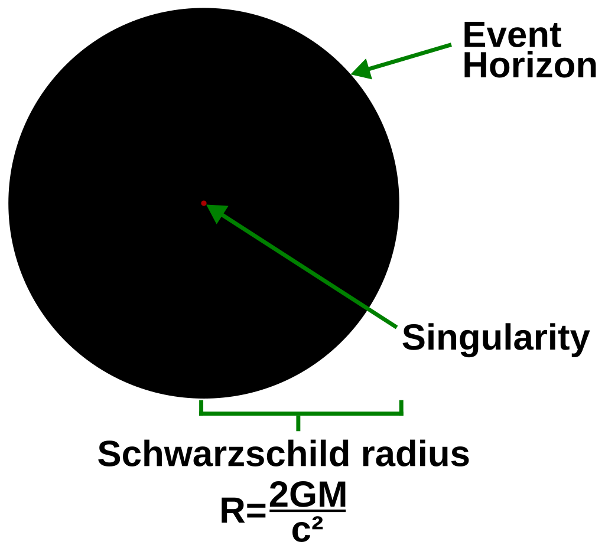
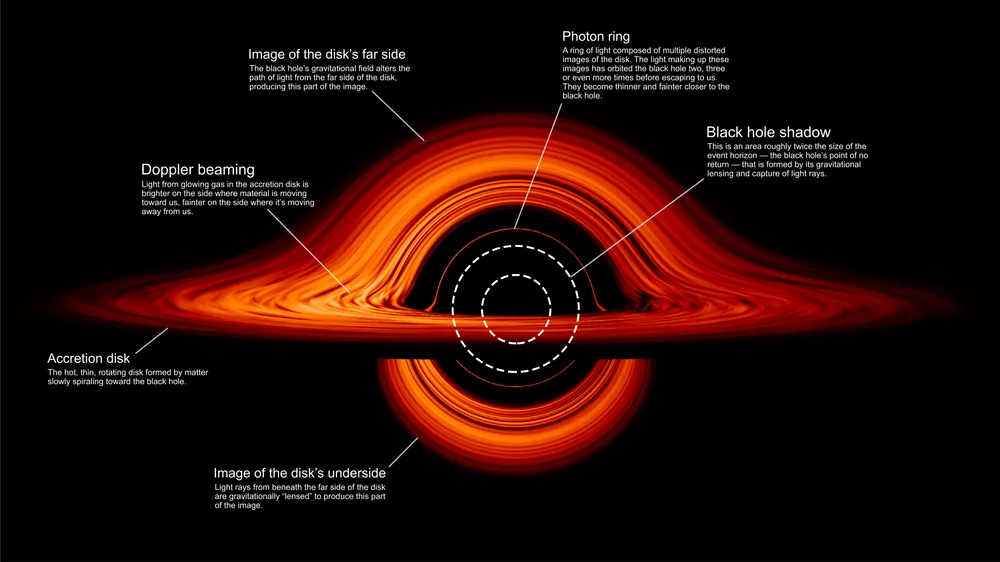
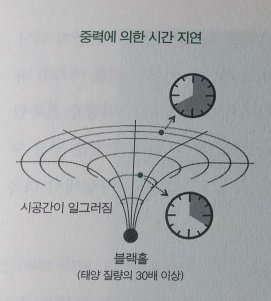
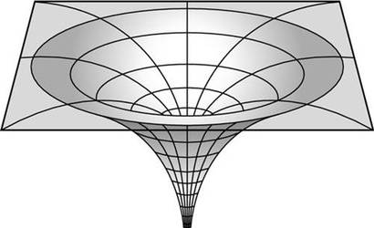

블랙홀이 되는 조건

강한 중력 붕괴
블랙홀은 질량이 매우 큰 천체가 중력 붕괴를 일으키면서 형성됩니다. 특히, 태양 질량의 약 3배 이상인 별이 생의 마지막 단계에서 자체 중력에 의해 붕괴하면 블랙홀이 될 가능성이 높습니다.

슈바르츠실트 반경 도달
천체가 특정한 반경 이하로 압축될 경우, 그 천체의 중력이 너무 강해져서 빛조차 빠져나올 수 없습니다. 이 반경을 슈바르츠실트 반경이라고 하며, 천체가 이 크기보다 작아지면 블랙홀로 변하게 됩니다.

사건의 지평선 형성
블랙홀에는 빛이나 정보가 빠져나올 수 없는 경계선이 존재하며, 이를 사건의 지평선이라고 합니다. 천체가 붕괴하면서 사건의 지평선이 형성되면, 그 내부로 들어간 물체는 외부로 나올 수 없습니다.
블랙홀 주변의 시간과 공간

시간 지연
블랙홀 주변에서는 중력이 극도로 강하기 때문에 시간이 느려집니다. 외부에서 블랙홀 근처에 접근하는 물체를 보면, 그 물체의 시간이 점점 느려지는 듯 보이며, 사건의 지평선에 가까워질수록 멈춰있는 것처럼 보입니다. 이 현상은 중력에 의해 시간이 늘어나는 상대성이론적 효과입니다.

공간의 왜곡
블랙홀의 중력장은 주변 공간을 심각하게 휘게 만듭니다. 이는 빛의 경로를 휘게 만들고, 블랙홀 주변에서는 빛조차 직진하지 못하며 휘어집니다. 이로 인해 우리는 블랙홀의 강한 중력장 때문에 빛이 굴절되는 중력 렌즈 현상을 관측할 수 있습니다.